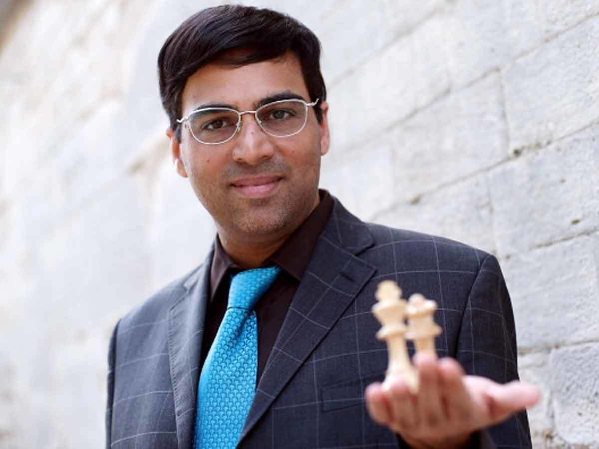
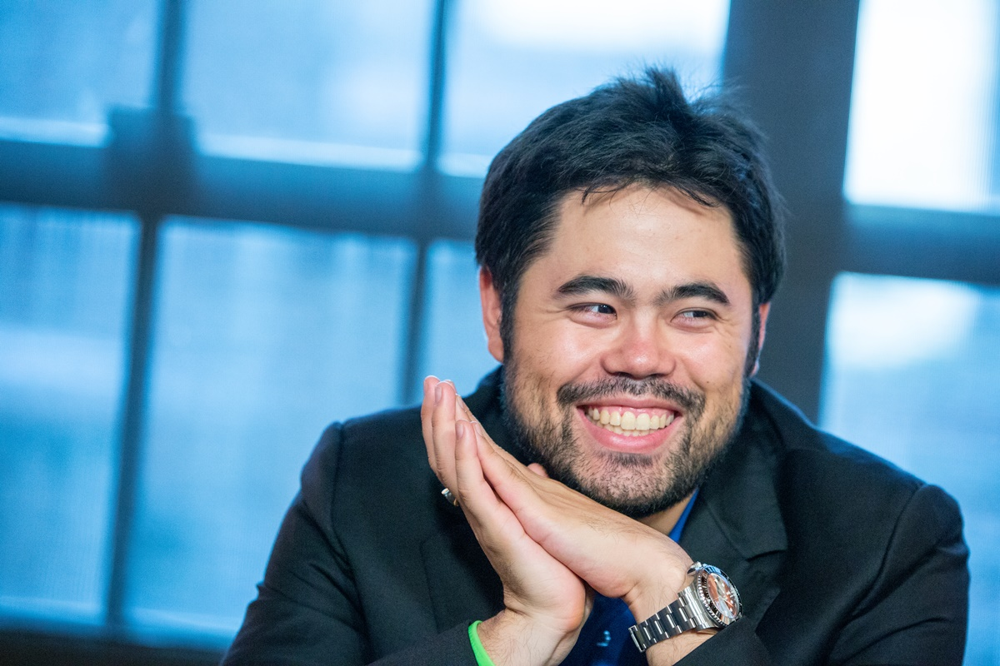

Chess

Chess is an abstract strategy game and involves no hidden information. It is played on a square chessboard with 64 squares arranged in an eight-by-eight grid. At the start, each player (one controlling the white pieces, the other controlling the black pieces) controls sixteen pieces: one king, one queen, two rooks, two knights, two bishops, and eight pawns. The object of the game is to checkmate the opponent's king, whereby the king is under immediate attack (in "check") and there is no way for it to escape. There are also several ways a game can end in a draw. Magnus Carlsen is the current World Champion.One of the goals of early computer scientists was to create a chess-playing machine. In 1997, Deep Blue became the first computer to beat the reigning World Champion in a match when it defeated Garry Kasparov. Though not flawless, today's chess engines are significantly stronger than even the best human players, and have deeply influenced the development of chess theory.
Famous players
GM Vishwanathan Anand

Viswanathan Anand (born 11 December 1969) is an Indian chess grandmaster and a former world chess champion. He became the first grandmaster from India in 1988, and is one of the few players to have surpassed an Elo rating of 2800, a feat he first achieved in 2006.[2]
Anand is a five-time world chess champion.[3] He defeated Alexei Shirov in a six-game match to win the 2000 FIDE World Chess Championship, a title he held until 2002. He became the undisputed world champion in 2007, and defended his title against Vladimir Kramnik in 2008, Veselin Topalov in 2010, and Boris Gelfand in 2012.[4] In 2013, he lost the title to challenger Magnus Carlsen, and he lost a rematch to Carlsen in 2014 after winning the 2014 Candidates Tournament.[5]
In April 2006, Anand became the fourth player in history to pass the 2800 Elo mark on the FIDE rating list, after Kramnik, Topalov, and Garry Kasparov.[6] He occupied the number one position for 21 months, the sixth-longest period on record.
GM Magnus Carlsen

Sven Magnus Øen Carlsen[a] (born 30 November 1990)[1][2] is a Norwegian chess grandmaster who is the current World Chess Champion, World Rapid Chess Champion, and World Blitz Chess Champion. Carlsen first reached the top of the FIDE world rankings in 2010, and trails only Garry Kasparov in time spent as the highest rated player in the world. His peak classical rating of 2882 is the highest in history. Carlsen also holds the record for the longest unbeaten run in classical chess.[3]
A chess prodigy, Carlsen finished first in the C group of the Corus chess tournament shortly after he turned 13, and earned the title of grandmaster a few months later. At age 15, he won the Norwegian Chess Championship, and at 17, he finished joint first in the top group of Corus. He surpassed a rating of 2800 at age 18 and reached number one in the FIDE world rankings aged 19, becoming the youngest person ever to achieve those feats.
Carlsen became World Chess Champion in 2013 by defeating Viswanathan Anand. In the following year, he retained his title against Anand, and won both the 2014 World Rapid Championship and World Blitz Championship, thus becoming the first player to hold all three titles simultaneously, a feat he repeated in 2019. He defended his classical world title against Sergey Karjakin in 2016, and against Fabiano Caruana in 2018.
GM Hikaru Nakamura

Hikaru Nakamura (born December 9, 1987) is an American chess grandmaster and streamer. A chess prodigy, he was at the time the youngest American to earn the title of Grandmaster, aged 15 years and 79 days. Nakamura is a five-time United States champion.[2] He won the 2011 edition of Tata Steel Chess Tournament Group A and represented the United States at five Chess Olympiads, winning a team gold medal and two team bronze medals.
His peak USCF rating was 2900, achieved in August 2015.[3] In October 2015, he reached his peak FIDE rating of 2816, which ranked him second in the world. In May 2014, when FIDE began publishing official rapid and blitz chess ratings, Nakamura ranked number one in the world on both lists. He was surpassed by Magnus Carlsen in the second publication of the rankings.[4]
History of Chess
The history of chess can be traced back nearly 1500 years to its earliest known predecessor, called chaturanga, in India; its prehistory is the subject of speculation. From India it spread to Persia. Following the Arab invasion and conquest of Persia, chess was taken up by the Muslim world and subsequently spread to southern Europe. The game evolved roughly into its current form by about 1500 CE.